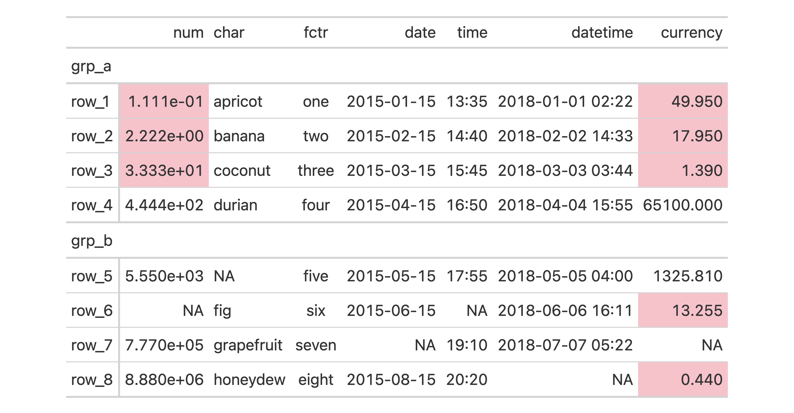
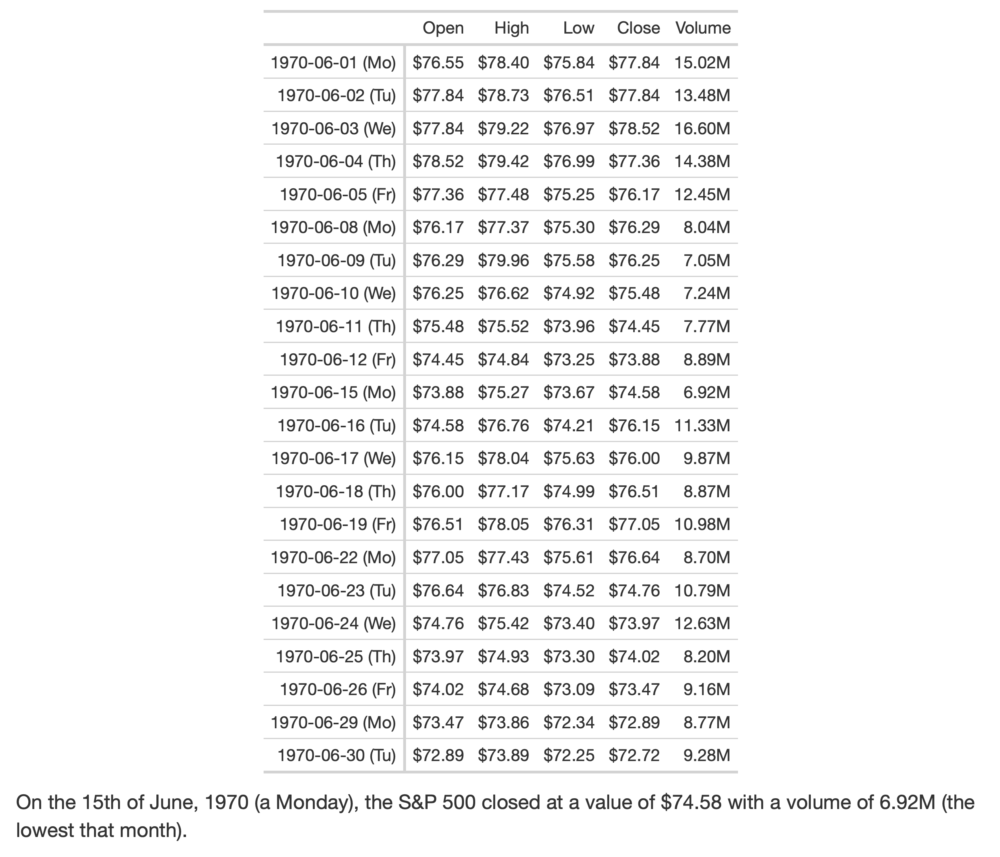
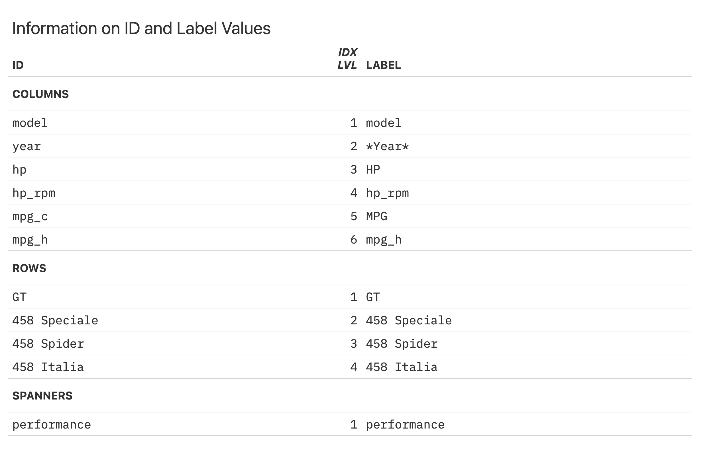
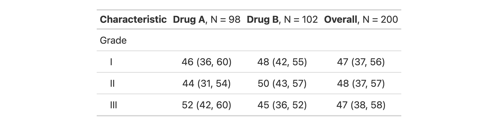
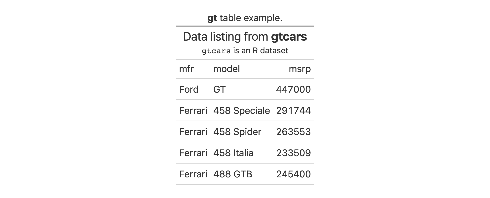
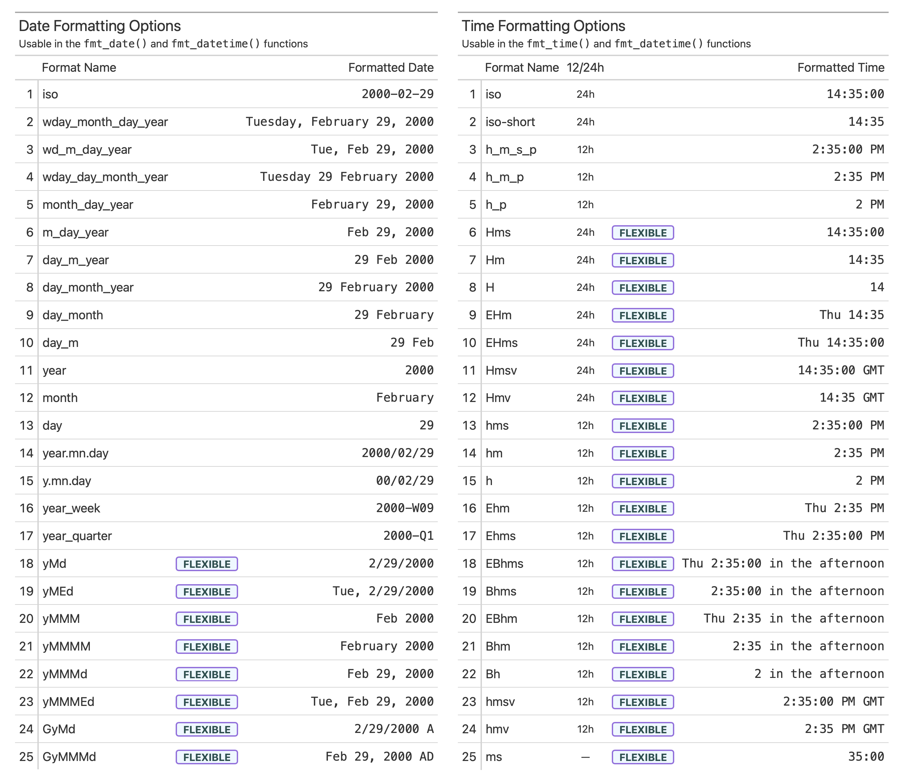
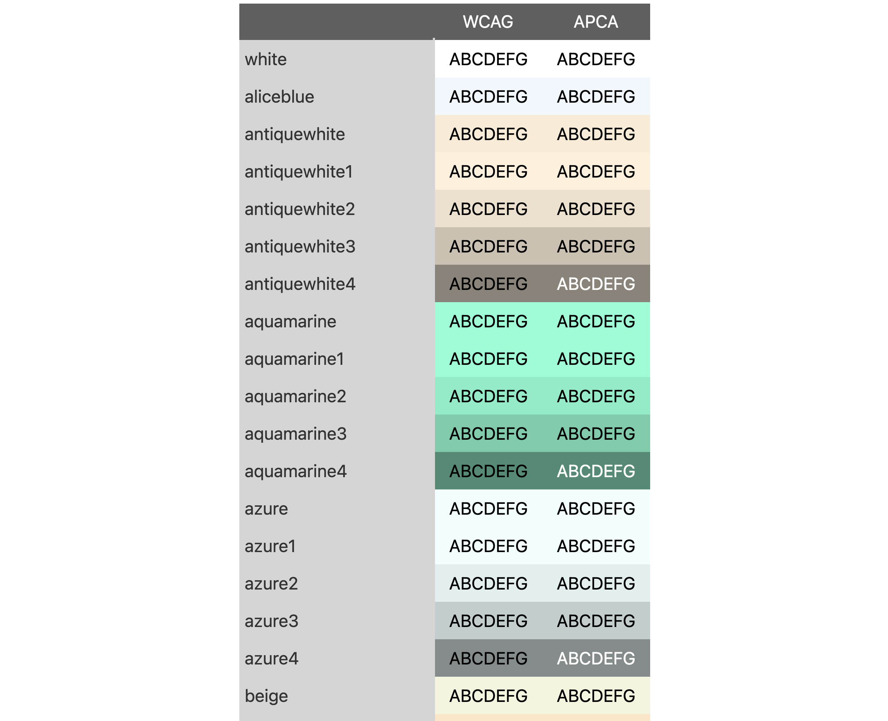

The gt package helps us create tables for publication and its development as of late has been quite swift! We’re pleased to share all the improvements in the newest release of gt: version 0.8.0. There’s a lot to talk about here. We will start by introducing all 14 new functions in this release. After that, we’ll discuss improvements to existing functions and rendered outputs. We can’t go through everything that’s changed (it’s just way too much) but what’s outlined here constitutes the top-tier changes.
sub_values(): Substituting Targeted Values in the Table Body
The new function sub_values() is here for substituting values in body cells with replacement text. The targeting of cells can be based on literal values, a regex pattern, or a specialized function of your own devising. This is best explained through examples so let’s start by creating an input table with three columns.
# A tibble: 7 × 3
num_1 int_1 lett
<dbl> <int> <chr>
1 -0.01 1 A
2 74 -100000 B
3 NA 800 C
4 0 5 D
5 500 NA E
6 0.001 1 F
7 84.3 -32 G
Values in the table body cells can be replaced by specifying which values should be replaced (in values) and what the replacement value should be. It’s okay to search for numerical or character values across all columns. It’s also fine whether the replacement value is of the numeric or character type.
For the most flexibility, it’s probably best to use the fn argument. With that you need to provide a function that returns logical values.
tbl %>%gt() %>%sub_values(fn =function(x) x <50, replacement ="Under 50")
Styling Targeted Values in the Table Body with tab_style_body()
We want the setting of styles to be as easy as possible so, to that end, we’ve added a helpful new function: tab_style_body(). This function is a bit like sub_values() and a bit like tab_style(). The idea is that basic style attributes can be set based on values in the table body. We can target body cells through value, regex, and custom matching rules, and, apply styles to them and their surrounding context (e.g., styling an entire row or column wherein the match is found). As before, we need examples to really understand what this function can do.
We’ll begin by creating a simple gt table with a stub and row groups. This contains an assortment of values that could potentially undergo some styling via tab_style_body().
Cells in the table body can be styled through specification of literal values in the values argument of tab_style_body(). It’s okay to search for numerical, character, or logical values across all columns. Let’s target the values 49.95 and 33.33 and style those cells with an orange fill.
Entire rows or columns can be styled by using specific keywords in the targets argument. For the 49.95 value we will style the entire row and with 33.33 the entire column will get the same styling.
In a minor variation to the prior example, it’s possible to extend the styling to other locations, or, entirely project the styling elsewhere. This is done with the extents argument. Valid keywords that can be included in the vector are: "body" (the default) and "stub". Let’s take the previous example and extend the styling of the row into the stub.
We can also use the pattern argument to target cell values in character-based columns. The "fctr" column is skipped because it is in fact a factor-based column.
For the most flexibility in targeting, it’s best to use the fn argument. The function you give to fn will be invoked separately on all cells so the columns argument of tab_style_body() might be useful to limit which cells should be evaluated. For this next example, the supplied function should only be used on numeric values and we can make sure of this by using columns = where(is.numeric).
gt_tbl %>%tab_style_body(columns =where(is.numeric),style =cell_fill(color ="pink"),fn =function(x) x >=0&& x <50 )

Cellular Extraction with extract_cells()
Replicating summary table values in a paragraph of text within an R Markdown or Quarto document typically involves non-optimal solutions including manual transcription or obtaining values from the input table and formatting that value. With the new extract_cells() function, we can extract a vector of body cell values from a gt_tbl object. The output vector will have the cell data formatted in the same way as in the table.
Here’s a minimal R Markdown document with a nicely formatted table that uses the sp500 dataset. That table object is assigned to tbl and is used in two instances of inline code (with r) that calls extract_cells() (pulling a single value in both cases).
---output: html_document---```{r echo=FALSE}library(gt)library(dplyr)tbl <- sp500 %>% dplyr::filter( date >= "1970-06-01" & date <= "1970-06-30" ) %>% dplyr::select(-adj_close) %>% dplyr::mutate(date = as.character(date)) %>% dplyr::mutate(dow = date) %>% dplyr::arrange(date) %>% gt(rowname_col = "date") %>% cols_move_to_start(columns = dow) %>% fmt_datetime( columns = dow, format = "EEEEEE" ) %>% cols_merge( columns = c(date, dow), pattern = "{1} ({2})" ) %>% fmt_currency( columns = c(open, high, low, close), currency = "USD" ) %>% fmt_number( columns = volume, suffixing = TRUE ) %>% cols_label( date = "Date", open = "Open", high = "High", low = "Low", close = "Close", volume = "Volume" ) %>% opt_vertical_padding(scale = 0.35) %>% tab_options(table.font.size = px(12))tbl```On the 15th of June, 1970 (a `r vec_fmt_datetime("1970-06-15", format = "EEEE")`), the S&P 500 closed at a value of `r extract_cells(tbl, close, "1970-06-15")` with a volume of `r extract_cells(tbl, volume, "1970-06-15")` (the lowest that month).
The rendered document below gives us exactly what we need since the inline code statements get the correctly formatted text for the paragraph (and without any worry of reproducibility problems):

The bonus usage of vec_fmt_datetime() in the first inline code statement utilizes new date and time formatting capabilities. This will be discussed in a later section of this post.
Decimal Alignment for Numerical Values in a Column
We can now have decimal alignment for numeric values and this is made possible with the new cols_align_decimal() function. The function ensures that columns targeted are right-aligned, that accounting notation is supported, footnote marks don’t interfere, and whole numbers align correctly.
For now, this function only works adequately for HTML table output. We’ll be working to ensure that cols_align_decimal() will operate with all other output formats in a future release.
Getting a Table with Information About Your Table (So Meta!)
If you find yourself not knowing the ID values of certain cells in the table (sometimes necessary for adding footnotes, styles, etc.) the new tab_info() function can help. Here’s an example where a small table is generated from the gtcars dataset.
You might receive this table and not know the id value or column number for the mpg_c column (it has the "MPG" label now). Through use of tab_info() we can get an informative table that summarizes all of the table’s ID values, their indices, and their associated labels.
tab_info(gt_tbl)

With this information at hand we see that the column with the "MPG" label has the mpg_c ID value. Knowing this, we could successfully use tab_style() to style the body cells below that column. Like this:
We intend to continuously improve this function in later versions of gt so you’ll have even more useful information when you need it.
Safe Removals of Table Components (the rm_*() Family)
Much of gt is about adding things to a table but what about doing the opposite (taking things away)? The new family of rm_*() functions (rm_header(), rm_stubhead(), rm_spanners(), rm_footnotes(), rm_source_notes(), and rm_caption()) let us safely remove parts of a gt table. This can be advantageous in those instances where one might obtain a gt table through other means (perhaps from another package that produces gt tables?) but would prefer to excise some parts of it.
For example, the gtsummary package is built on gt and can generate summary tables that are coercible to the gt_tbl class. Let’s make a summary statistics table with the trial dataset in gtsummary.
If we don’t want any of the included footnotes, we can transform the gtsummary table to a gt one, and then perform the removal with rm_footnotes().
summary_tbl %>%as_gt() %>%rm_footnotes()

With those footnotes gone, we are free to add our own custom footnotes (since we now have a gt_tbl object) or just carry on with a more minimal table.
tab_caption(): Another Way to Add (or Edit) a Table Caption
We can easily add a caption to a gt table (or replace an existing one) with the new and convenient tab_caption() function. You might not have known that it was possible before to add a caption (the other option is through the gt() function’s caption argument). The new function makes this capability more obvious, and makes the caption editable in cases where you receive a gt table as output.
Here’s an example of how to use tab_caption() in a table built with some of the gtcars dataset.
gtcars %>% dplyr::select(mfr, model, msrp) %>% dplyr::slice(1:5) %>%gt() %>%tab_header(title =md("Data listing from **gtcars**"),subtitle =md("`gtcars` is an R dataset") ) %>%tab_caption(caption =md("**gt** table example."))

Making Your Numerals Roman
The new formatter function fmt_roman() lets us easily format numbers to Roman numerals (either as uppercase or lowercase letters). The vec_fmt_roman() vector-formatting function was also introduced here as all fmt_*() functions get a matching vec_fmt_*() analogue. Let’s see how this works with a practical example.
We could have a numerical label in the table stub and format those numbers to (lowercase) Roman numerals. We could also use the pattern argument to combine the formatted value with template text. Here’s how that looks in code and rendered as an HTML table:
There’s a few other things at play here. New in v0.8.0 is the stub() helper function, allowing for easier targeting of the stub column. Also new is the ability to use a fmt_*() function on a stub column, and, cols_align() on a stub column is now allowed.
Improvements to Date and Time Formatting
The fmt_date() and fmt_time() functions (used to format dates and times) now have many more date and time styles. Dates and times can be translated to different spoken languages and the new locale argument has been added to these functions to provide localization control. These improvements also apply to the vec_fmt_date() and vec_fmt_time() vector-formatting variants, so let’s use those for two examples.
Let’s define a string-based datetime value. This is acceptable input for all date/time formatting functions so long as ISO-8601 formatting is used.
str_dt <-"2018-07-04 22:05"
We can use date_style and time_style keywords with vec_fmt_date() and vec_fmt_time(), respectively, to easily format to a date or time.
There are now 41 different date formatting styles and 25 different time formatting styles. Many of these styles are flexible, meaning that the structure of the format will adapt to different locales. We can always use info_date_style() or info_time_style() to call up info tables that serve as handy references to all of the date_style and time_style options.

The fmt_datetime() and vec_fmt_datetime() functions allow the use of date and time styles to generate a formatted datetime. Let’s use the "yMMMEd" date style and "hms" time style (both flexible) to generate a datetime string with vec_fmt_datetime():
Aside from the translated month name, notice that the date formatting here with "yMMMd" automatically conformed to the French locale by putting the day number at the front and adjusting punctuation (this is what is meant by the ‘flexible’ terminology).
Unlike the specialized date and time formatting functions, fmt_datetime() and vec_fmt_datetime() also include the format argument so anyone can provide a strptime format to get the formatting just right. New in v0.8.0 is the ability to provide a CLDR (Common Locale Data Repository, a Unicode project) datetime pattern to format, allowing for even more highly customized output that is locale-aware. Let’s demonstrate this with vec_fmt_datetime() (the vector formatting version of fmt_datetime() which gets all of the same enhancements).
Using the same datetime value of "2018-07-04 22:05", let’s use the CLDR pattern of "EEEE, MMMM d, y, h:mm a" to get a formatted datetime:
vec_fmt_datetime(str_dt, format ="EEEE, MMMM d, y, h:mm a")
[1] "Wednesday, July 4, 2018, 10:05 PM"
By using the locale argument, this can be formatted as a Dutch datetime value:
vec_fmt_datetime(str_dt, format ="EEEE, MMMM d, y, h:mm a", locale ="nl")
[1] "woensdag, juli 4, 2018, 10:05 p.m."
Learning about CLDR datetime formatting can be difficult at first but the help articles for fmt_datetime() and vec_fmt_datetime() have been completely overhauled and the updated documentation goes at length to explain the new formatting functionality.
Improvements to HTML Outputs
The as_raw_html() function is useful for generating an HTML string for table-in-HTML-email situations (i.e., using the blastula package) and for HTML embedding purposes. By default, the function performs CSS-inlining to make those use cases more robust and while this was mostly fine prior to v0.8.0, it had two major problems: (1) it was slow, and (2) the underlying R code couldn’t always keep up with changes to our SCSS styles, resulting in incorrect HTML output.
This is now solved by integrating the juicyjuice package into as_raw_html(). That package uses the juice JS library for a far more performant and correct CSS-inlining solution.
While we’re talking about HTML output, tables now have some padding (and a way to control the values through tab_options()). Tables in rendered HTML documents produced by R Markdown and Quarto used to be way too close to adjacent paragraphs of text. But now there is a comfortable amount of space.
Color Contrast Improvements in data_color()
The data_color() function allows us to color the background of cells based on data, and gt smartly chooses a text color that tries to provide the most contrast between text and background. We wanted to improve that feature so now data_color() has a contrast_algo argument that allows us to choose between two color contrast algorithms: "apca" (Accessible Perceptual Contrast Algorithm, the default algo) and "wcag" (Web Content Accessibility Guidelines). Here is an excerpt of a table (code and complete output of table is available at this GitHub gist) that compares the two color contrast algorithms used in data_color().

With darker backgrounds (somewhere in the midrange), the APCA algorithm tends to favor light text in the foreground. This can be seen in the table excerpt with the X11 colors "antiquewhite4","aquamarine4", and "azure4"; all of these have light text with APCA whereas WCAG uses dark text. We believe that the APCA algorithm is the better choice but we also included the widely-used WCAG here so that you have options.
More Accessibility Enhancements for HTML Table Outputs
HTML tables as produced by gt can be structurally complex. One can include row groups, column spanners, summary sections, and more. We did some work in v0.7.0 to make screen readers (applications that allow blind or visually impaired users to read the text that is displayed on the computer screen) better parse certain tables, and, we continued the work for this release.
Dr. JooYoung Seo (@jooyoungseo, on GitHub), now a co-author of the package) led the work in improving the accessibility of structurally-complicated gt tables (those with multi-level headings, irregular headers, row groups, etc.). We adhered to the W3C WAI (Web Accessibility Initiative) guidance while working through this and now, with v0.8.0, screen readers can better describe gt tables having such complex structures.
In Conclusion
That was probably a long read but we hope it was an interesting one, full of things you can use! We care a lot about the gt package and so we’re relentless about improving it. Your feedback through GitHub Issues is incredibly valuable so always feel free to file an issue. Want to ask a question or discuss improvements before filing an issue? The Discussions page in the gt repository is great for that. Want another way to keep in touch? Check out the fun new @gt_package account on Twitter!